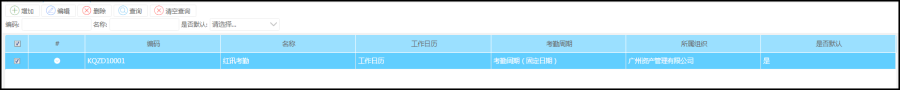
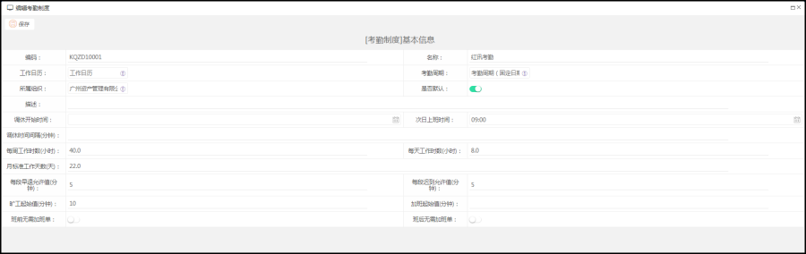

功能描述
是指为具体组织制定一个考勤制度，会使用工作日历，考勤周期等基础数据。设置迟到允许值，早退允许值，旷工起始值等数据
考勤制度具体是在考勤计算使用
操作步骤
菜单路径：考勤管理--->考勤业务设置---考勤制度
可添加，编辑考勤制度数据

具体信息

字段属性
1>”早退允许值”数值设置五分钟，正常下班时间为18:00,那么17:55取卡记为正常下班
2>“迟到允许值”数值设置五分钟，正常上班取卡时间为9:00，那么我9:05取卡记为正常上班
3>"旷工起始值" 数值设置60分钟，那么正常上班是8:00-18:00，如果9点之后打上班卡，17之前打下班卡，则为旷工